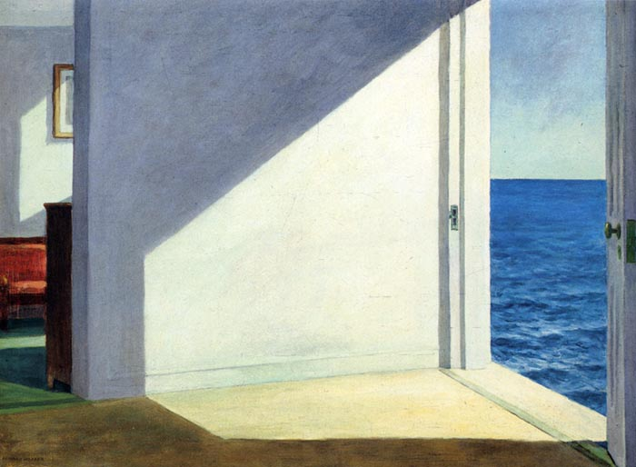

Psicanalista · Florianópolis
Waléria Nunes
Atendimento presencial e online
“A psicanálise é, em sua essência, uma cura pelo amor.”
Sigmund Freud

Sobre
Psicanalista de orientação lacaniana, com formação teórico-clínica permanente junto ao Instituto Clínico de Psicanálise de Orientação Lacaniana de Santa Catarina (ICPOL-SC) e à Escola Brasileira de Psicanálise (EBP – Seção Sul). Atende adolescentes e adultos, presencialmente em Florianópolis e online.
Mestra e doutoranda em Literatura pela Universidade Federal de Santa Catarina (UFSC), dedica-se à pesquisa das relações entre literatura, psicanálise e clínica. Esse atravessamento também marca seu percurso de formação e pesquisa: em 2020, coordenou o grupo “Poesia e psicanálise: uma caminhada pelos litorais da palavra” e, atualmente, integra a equipe de coordenação do Núcleo de Pesquisa em Psicanálise e Literatura do ICPOL-SC.
Atendimento
Público
Adolescentes e adultos
Modalidade
Presencial em Florianópolis e online.
Consultório
R. Des. Vítor Lima, 260Trindade · Florianópolis — SC
88040-401 WhatsApp · (48) 99116-0420 ↗ nuneswaleria@gmail.com